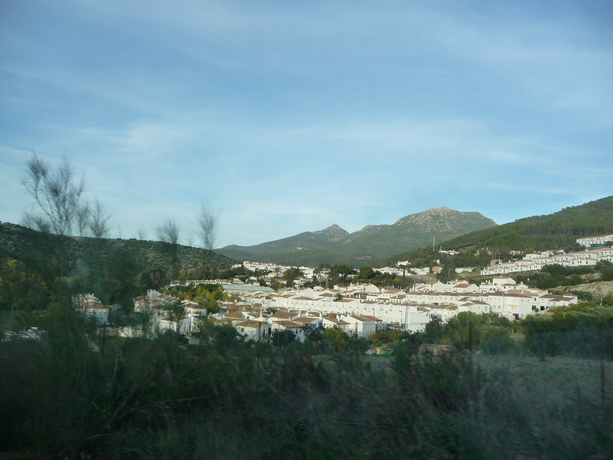
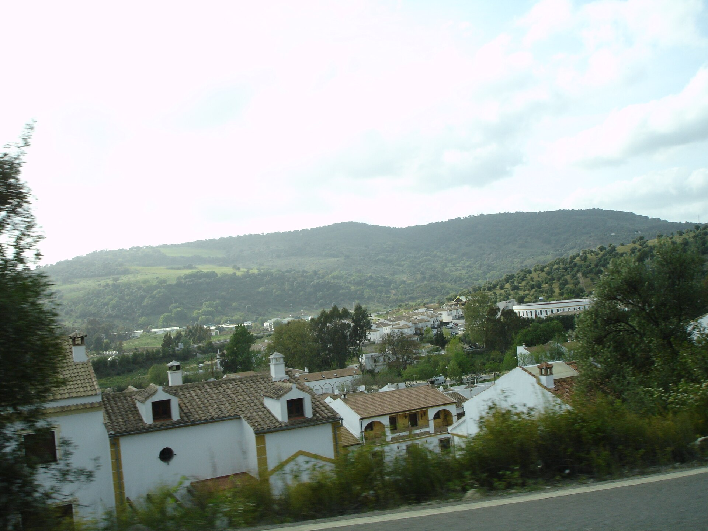

DE UNA
ESCAPADA
La LeyendaUn lugar por descubrir.

Un apartamento en la sierra gaditana.
Estas páginas son el comienzo del viaje.
ESPAÑA
ANDALUCÍA
CÁDIZ
EL BOSQUE
Primero,
elegir el lugar.
La Leyenda es un apartamento rural en El Bosque. Un punto de partida para conocer el pueblo y el paisaje de la Sierra de Cádiz.
Antes de llenar la agenda, conoce el espacio en el que vas a quedarte: un apartamento completo con dos dormitorios, cocina y salón.
EL DESTINO YA TIENE NOMBRE.
EL RECORRIDO LO ELIGES TÚ.
Puertas adentro.
APARTAMENTO COMPLETOSÍMBOLO EDITORIAL
NO REPRESENTA EL PLANO REAL
- Superficie
- 75 m²
- Dormitorios
- 02
- Baños
- 02
Salón, cocina equipada y balcón. Wi-Fi y aire acondicionado. Piscina comunitaria de temporada.
Confirma la apertura de la piscina y las condiciones para tus fechas en la plataforma.
Ver los espacios reales en Booking.comDatos de la ficha del alojamiento en Booking.com. Las fotografías de esta web muestran únicamente el entorno.
Lo cotidiano, resuelto
La ficha incluye horno, microondas, frigorífico, cafetera y hervidor en la cocina, además de ropa de cama y toallas.
Antes de hacer la maleta
La plataforma indica que no se permite fumar, celebrar fiestas ni alojarse con mascotas. Revisa las normas vigentes y las condiciones de tu reserva antes de confirmar.
Fuera del
cuaderno.

Seguir el río.
El sendero del río Majaceite une El Bosque y Benamahoma, en el Parque Natural Sierra de Grazalema. El recorrido acompaña al agua entre vegetación de ribera.
Consultar el sendero en la guía oficialConsulta el estado y las indicaciones del sendero antes de salir. El río no es una zona de baño.
Del papel
al calendario.
El Bosque11670 · Cádiz · Andalucía
Situar el pueblo en Google Maps ↗El enlace sitúa el municipio, no la propiedad.Elige tus fechas.
Consulta el precio, la ocupación y las condiciones para tu viaje en la ficha de La Leyenda.
Consultar estancia en Booking.comReserva gestionada en una plataforma externa.